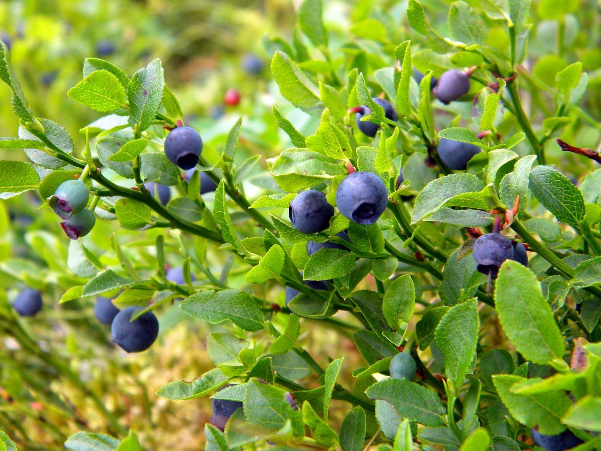
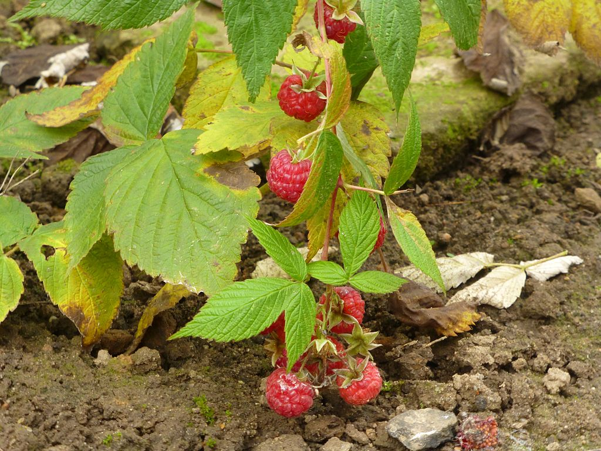
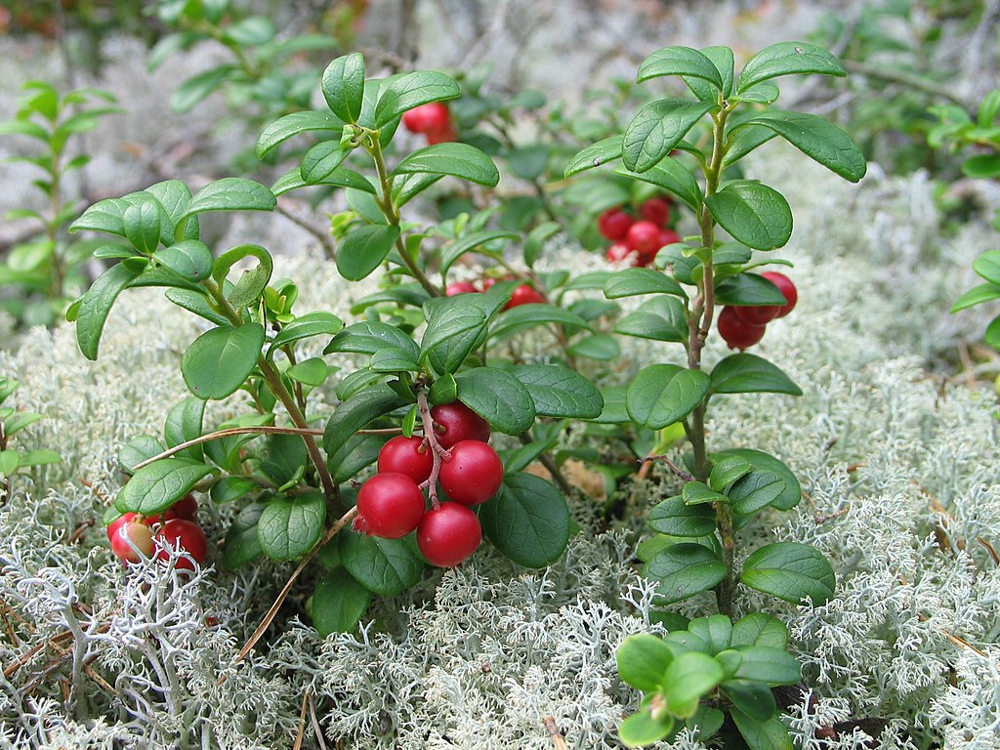
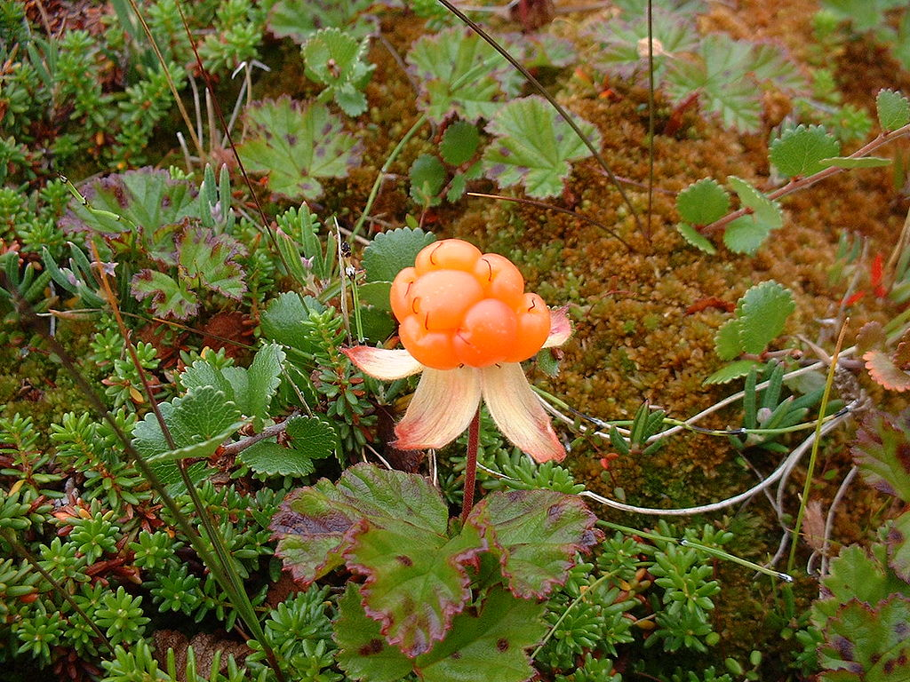
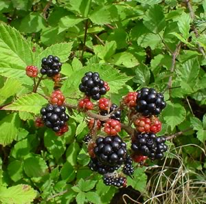

Wild berries in Finland
Welcome to this website! Here we will talk about the general wild berries which grow in Finland. Finland is very nice country with different kinds of wild berries. Most known berries as European blueberry, raspberry, cowberry, blackberry, cranberry, cloudberry, bog blueberry, wild strawberry. We are going to focus on blueberry, raspberry, and cowberry.
https://fi.wikipedia.org/wiki/Mustikka#/media/Tiedosto:Vaccinium_myrtillus_30999834.jpg
https://fi.wikipedia.org/wiki/Vadelma#/media/Tiedosto:Himbeeren_am_Strauch.JPG
https://fi.wikipedia.org/wiki/Puolukka#/media/Tiedosto:Vaccinium_vitis-idaea_20060824_003.jpg
https://fi.wikipedia.org/wiki/Lakka_(kasvi)#/media/Tiedosto:Hjortron.jpg
https://fi.wikipedia.org/wiki/Karhunvatukka#/media/Tiedosto:Blackberries_on_bush.jpg